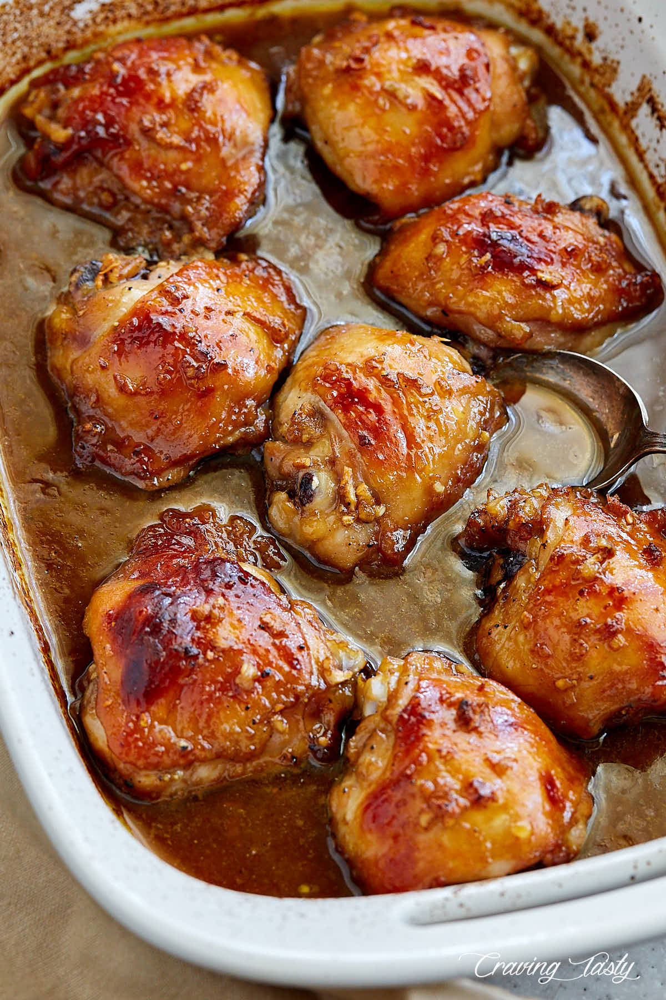

That Kickin' Chicken

This is the type of chicken you bring home to your mom, cuz it's hot and wholesome. Not only will this chicken clear out your nasal passages, but it will satisfy your hunger. It's versatile too! You can throw it over rice, in a salad, or wrapped up in a burrito with beans, rice, and cheese.
Ingredients
- 2.5 lbs chicken thigh
- 1 tbsp olive oil
- 2 tsp paprika
- 2 tsp cumin
- 2 tsp onion powder
- 2 tsp garlic powder
- 2 tsp ancho chili powder
- 1 tsp salt
- 2 tbsp lime juice
- 2 tbsp orange juice
Instructions
- Preheat your oven to 425°F (218°C).
- In a large bowl make the marinade by mixing together 1 tbsp of oil, orange juice, and lime juice and all of the seasonings. Reserve a couple of spoonfuls of the marinade and set aside.
- Add in the chicken and coat all of the surfaces. If you want to allow the chicken to marinate, give it an hour or two. I just roast it right away.
- Line a large sheet pan with foil and spray it with oil. Place the chicken thighs on the sheet pan with the smooth side facing down. Roast for 12-14 minutes. While the chicken is cooking, scroll down to the vegetable section working on the rest of the prep.
- After your chicken timer is up, remove it from the oven and chop it into a large dice then return to the sheet pan. It is okay if it isn't cooked all of the way through, it is going back into the oven.
- Mix in the remaining marinade that your reserved and stir it into the chopped chicken. Spread it out across the pan so that it is evenly space and return to the oven on the top shelf and change the oven to broil.
- Broil for 5-8 minutes or until the chicken has browned to your liking. After a couple of minutes you can remove the pan and stir the chicken for even browning. Keep a close eye on it as it will be prone to burning under the broiler.